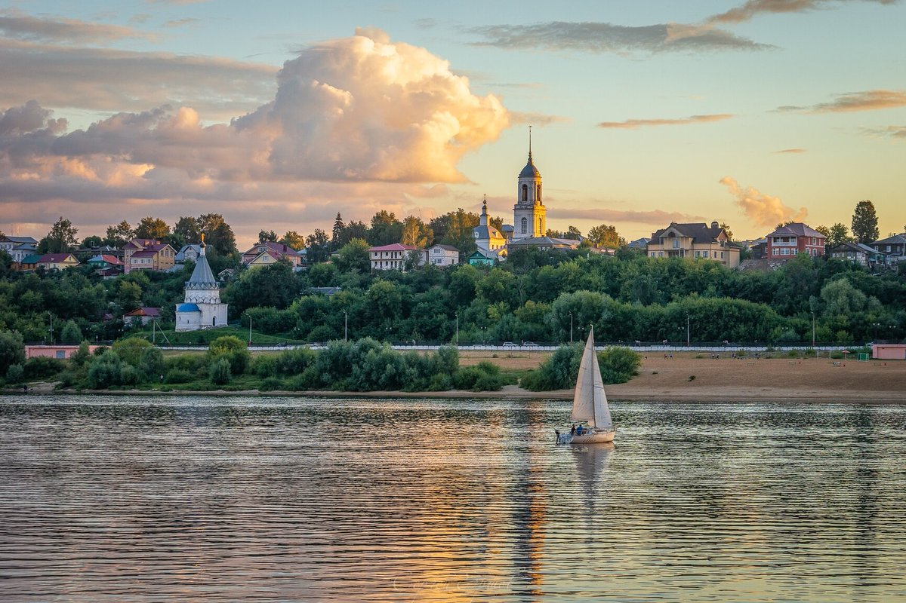

Муром
Относится к числу самых древних городов страны, который по праву называют ровесником тысячелетней российской государственности. В течение веков он оставался стратегически важным форпостом на восточных границах Руси, служил сценой для кровопролитных междоусобных военных сражений, жестоких разорительных набегов. Муром пережил страшные пожары, нашествия татар, Смуту, при этом каждый раз он восставал из руин и пепла.

Площадь Крестьянина – одна из исторических площадей города Мурома, также называемая Базарной, Троицкой и Монастырской. Изначально в Муроме было четыре крупных площади. Для того, чтобы иметь возможность продать коня на площади, любой торговец должен был заплатить пошлину, которая шла на благоустройство Мурома.
Муромский историко-художественный музей занимает помещения бывшего старинного особняка, которым владели купцы Голубевы. Истории и культуре города посвящена экспозиция «Сокровища древнего Мурома», открытая в 2013 году. Позднее в музее появилась еще одна экспозиция, ее назвали «Город и горожане». В целом, в его залах ежегодно проводится до 15 выставок.